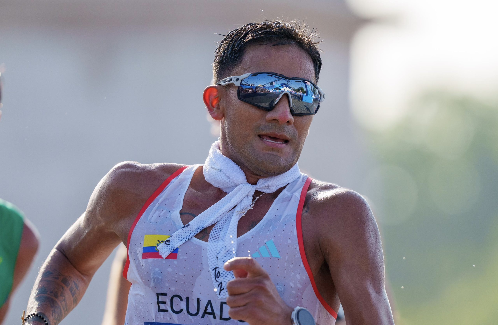
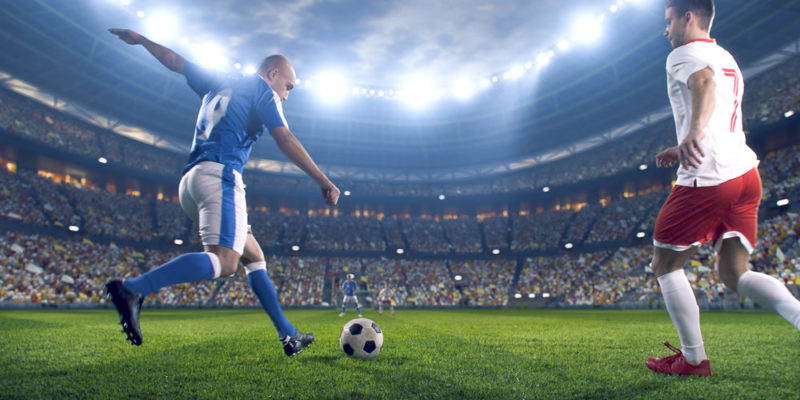
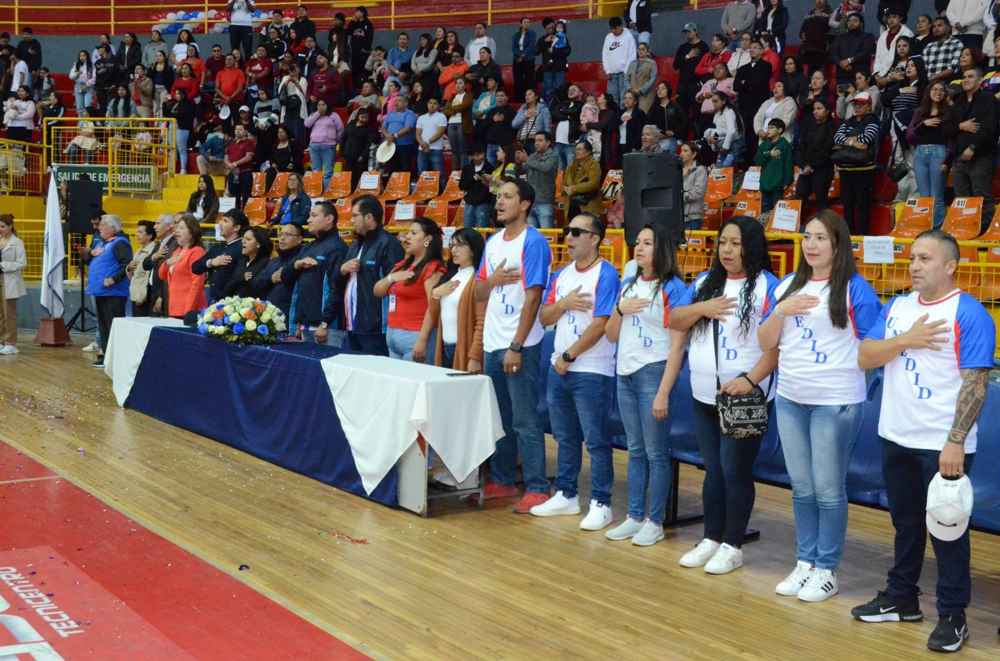
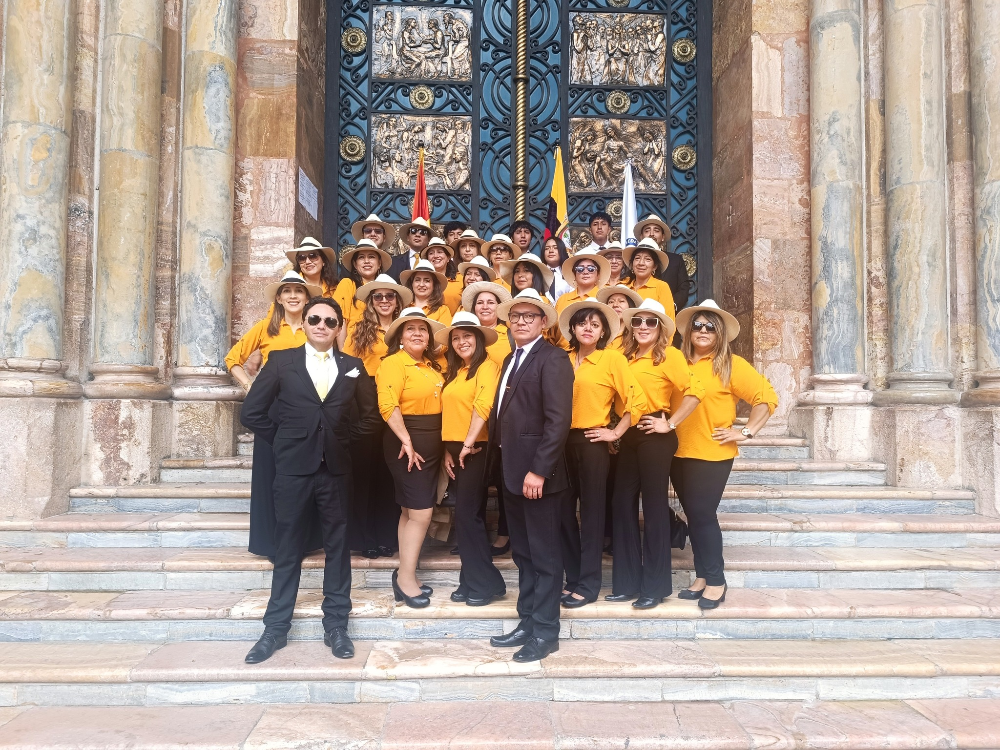

UNIDAD EDUCATIVA DE INICIACION Y DESARROLLO DEPORTIVO DEL AZUAY
"UNEDID"
El objetivo de esta página es dar a conocer los deportes que se practican dentro de las jornadas deportivas en el colegio UNEDID, ayudarte a que entiendas de mejor manera los deportes y motivarte a seguir uno de estos deportes.
🎯 Historia de la UNEDID
La "Unidad Educativa Remigio Romero y Cordero" antes llamada "UNEDID" es un colegio fiscal que se encuentra en la ciudad de Cuenca, que retoma su antiguo nombre de "UNEDID" . Durante muchos años fue conocida como "UNEDID". Se destacó por ser netamente un colegio deportivo, convirtiéndose en un buen enfoque para competencias intercolegiales. Su prestigio se basó no solo en lo académico, sino también en la disciplina, el trabajo en equipo y la formación de sus estudiantes a través de todas sus actividades físicas y deportivas.
En sus mejores momentos, este colegio recibió reconocimiento en torneos de fútbol, indor y ecuavoley. Se determinó que la incorporación de deportes dentro del ámbito educativo eran parte esencial de la vida estudiantil. Aquí, el deporte no era solo una materia, sino un principio educativo. Muchos estudiantes acudían a este colegio por esta razón.
Con el tiempo, el enfoque de la institución fue cambiando. El nuevo reglamento y el cambio de normas del Ministerio de Educación quitaron este enfoque deportivo y, aunque todavía sigue presente, ya no es el foco principal. Esto llevó a que algunos en la comunidad sintieran que esta Institución había perdido su carácter histórico. Aunque así, lo que realmente pasó fue un cambio de prioridades en el plan educativo moderno.
Actualmente, con el apoyo del "Ministerio de Educación", la Institución logró implementar un Bachillerato Técnico en Deportes. Esto busca integrar de nuevo el legado deportivo que tenía este colegio, haciendo enfoque otra vez en el deporte y la actividad física. Así, los estudiantes tendrán la oportunidad de desarrollarse tanto académicamente como físicamente. Se espera recuperar oficialmente la identidad que durante décadas distinguió a esta Institución en Cuenca.
En cuanto a su origen, este colegio lleva el nombre de Remigio Romero y Cordero, una figura destacada de la historia cuencana. Remigio Romero y Cordero fue un escritor, periodista y educador del siglo XIX y principios del XX. Se le reconoce por su aporte a la cultura y a la educación en Ecuador. Sus ideas estaban relacionadas con el desarrollo social, la formación ciudadana y el fortalecimiento de la identidad regional.
Al pasar de las décadas, la Institución creció en infraestructura, número de estudiantes y oferta académica. Se convirtió en uno de los colegios públicos importantes de la ciudad, adaptándose a las demandas sociales cada cierto tiempo. Su evolución también demuestra los cambios en el sistema educativo ecuatoriano, especialmente en la división del bachillerato y la incorporación de modalidades técnicas.

Respecto a los estudiantes destacados, Brian Daniel Pintado Álvarez es un destacado deportista ecuatoriano nacido en Cuenca en 1995 y reconocido mundialmente por su trayectoria en la marcha atlética. Se volvió muy reconocido al convertirse en el primer atleta ecuatoriano en ganar dos medallas en el mismo evento de los Juegos Olímpicos (París 2024): medalla de oro en los 20 km de marcha y medalla de plata en el maratón de marcha por relevos mixtos junto a Glenda Morejón.Además de sus grandes éxitos, Daniel Pintado ha mantenido lazos importantes con la "UNEDID". Según reportes de redes sociales, Pintado estudió en la "Unidad Educativa Remigio Romero y Cordero", donde se enfocó en la educación básica durante varios años antes de dedicarse al deporte y, posteriormente, a su carrera atlética internacional. Durante una visita a su antigua escuela, recibió homenajes y compartió con estudiantes su historia de esfuerzo, disciplina y superación, inspirando a las nuevas generaciones a seguir sus sueños.
En este contexto, el regreso al enfoque deportivo no representa un cambio improvisado, sino la recuperación de una identidad antigua que tenía años antes. La adición del Bachillerato Técnico en Deportes busca proyectar hacia el futuro esta tradición. La idea es combinar la herencia mantenida relacionada con el nombre "Remigio Romero y Cordero" con el modelo educativo actual que responde a las necesidades actuales de los estudiantes de Cuenca y del Azuay.
Formar estudiantes íntegros mediante la educación y el deporte.
Ser una institución reconocida por su excelencia académica y deportiva.
⭐ Deportes que se realizan en la Remigio Romero y Cordero

⚽ Indoor
El indoor en nuestra institución muestra la competitividad, el querer mejorar y el querer ganar. Al practicarse en las jornadas deportivas puede demostrar la determinación de cada curso. Si llegas a ser uno de los más destacados puedes formar parte de los intercolegiales de la institución, representando a nuestro colegio en partidos amistosos entre otras instituciones.
🏃 Atletismo
Muestra tu determinación, competitividad y resistencia en atletismo. Déjanos ver tu capacidad en la carrera de 100m, 200m y 400m que se realiza en las jornadas deportivas. Si lo que quieres es demostrar tu velocidad te recomendamos la de 100m y si quieres demostrar tu resistencia te sugerimos las de 300m y 400m.
🏀 Baloncesto
Muestra el trabajo en equipo, cooperación, la estrategia y disciplina que puedes alcanzar al practicar baloncesto en las jornadas deportivas de cada año. Este deporte no solo es divertido, también te permite compartir, mejorar y luchar juntos para ganar.
♟ Ajedrez
Demuestra tu estrategia, concentración y toma de decisiones en Ajedrez. Diferentes mentalidades, planeamiento y tácticas, 16 piezas a tu disposición para estrategias que te llevarán a la victoria. Muéstranos de qué eres capaz en este deporte mental.
🏊♀️ Natación
Muestra la perseverancia y la técnica en la natación, dejando ver la destreza en la piscina. Si logras destacar, puedes ser parte de nuestra selección institucional. Este deporte no solo fortalece el cuerpo, sino que templa el carácter y la disciplina de cada nadador, permitiendo representar a nuestro colegio en competencias intercolegiales.
🏐 Ecuavoley
El ecuavoley en nuestra institución refleja el gran trabajo en equipo que caracteriza a este deporte. Al practicarse en nuestro plantel, permite demostrar la agilidad de cada jugador. Si logran demostrar un gran nivel en los partidos podrías ser seleccionado para representar nuestro plantel en encuentros amistosos frente a otras instituciones.
¡Aprende más de los deportes!
Obtén más información sobre los deportes, objetivo, reglas, técnicas y más...


📞 Contacto y Redes Sociales
Dirección: Unidad Nacional - Cuenca - Ecuador